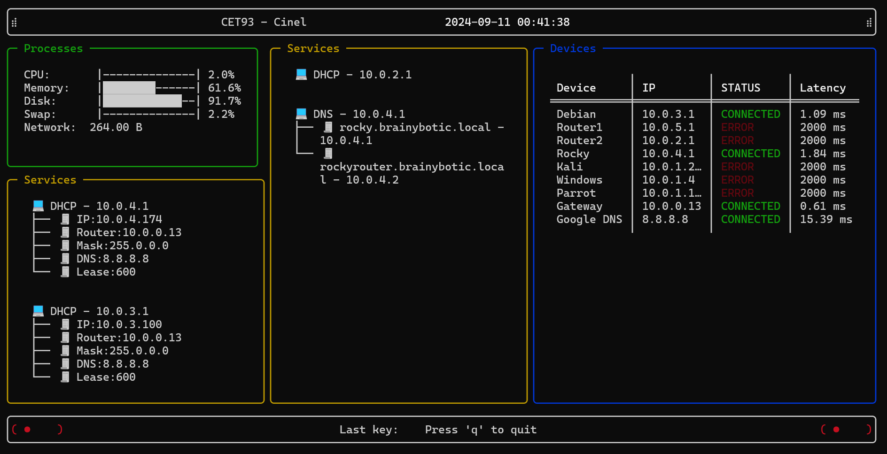
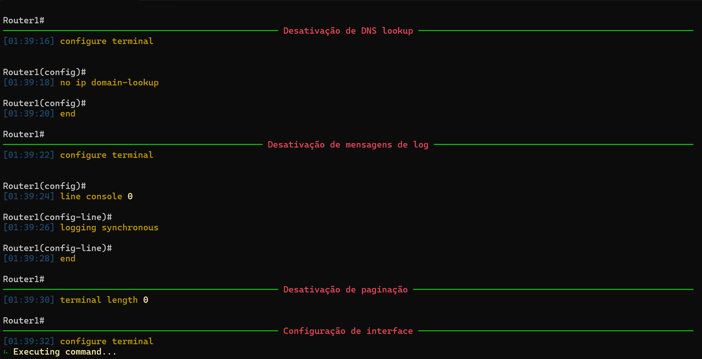

Utilitários
Para desenvolver alguns conceitos de python e de redes, desenvolvi os seguintes utilitários:
BrainyDash
BrainyDash é um painel de controle de código aberto para monitorizar sistemas e redes. Ele é feito em Python, e usa bibliotecas como Rich e psutil para exibir informações do sistema em tempo real.

BrainyRun
BrainyRun é um utilitário de linha de comando que executa comandos em um sistema remoto.
